Nagpur, India
Deekshabhoomi
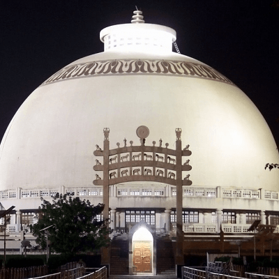
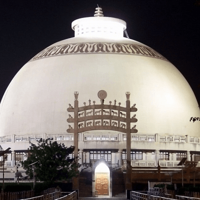
Deekshabhoomi is a sacred monument of Buddhism in Nagpur. Deekshabhoomi is a place where Dr.Baba Saheb Ambedkar converted into Buddhism and so did his thousands of followers. Deekshabhoomi is the place where not only BUDDHIST but all the people who believe in himself and the way of BUDDHA come together to pray for peace.
Zero Milestone
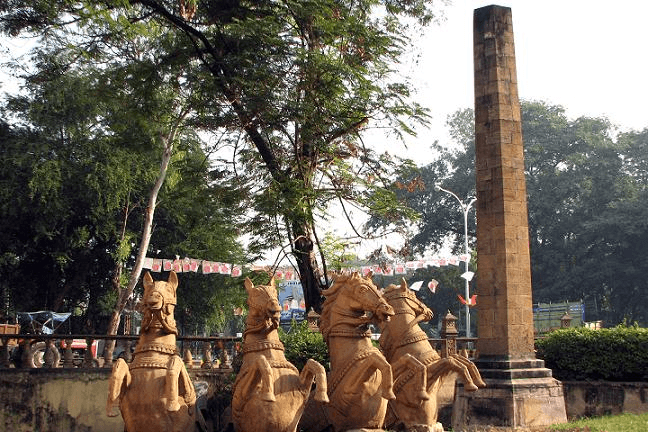
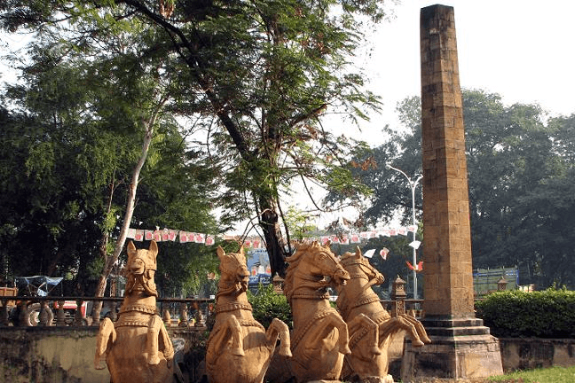
Nagpur is the largest city in the state of Maharashtra and is also very famous for "Zero Milestone". It is situated in the heart of the NAGPUR city and off course heart of INDIA. "Zero Mile stone of India" is located from where the distance of all the cities of India is calculated.
Nagzira
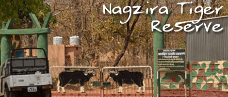
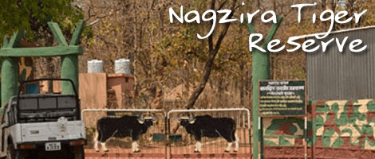
This small wildlife sanctuary covers an area of 152 sq km in the north east corner of Maharashtra in the Bhandara district 122km away from Nagpur. Nestled within the Vidarbha mountain range, it is often referred to as the "green oasis" of the region. Its rocky and undulating terrain is covered with thick Teak forests that support healthy populations of some of India's most endangered floral and fauna biodiversity.
It is open from 1st October to 15th June, closing for the monsoons from 16th June to 30th September. The best time to visit the sanctuary is in the summers from March to June, when tiger sightings are at their peak. Jeeps are available on hire, and one can even take in their own vehicle, but a guide is a necessity. The Pitezhari gate is the main point from where permits to enter the sanctuary can be taken. The park is open for morning and evening safaris from 6:30am - 10:30am and 3:30pm - 6:30pm.
Sitabuldi Fort
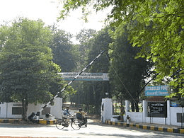
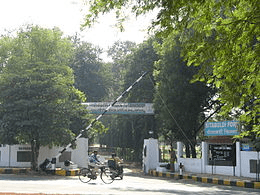
This historical landmark of the city is nestled on the Twin Mountains. The fort was built by a British Officer in the year 1857; since then it has become an interesting destination for the tourists visiting Nagpur.
Futala Lake
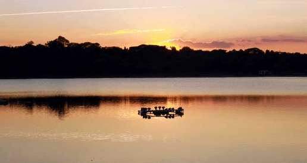
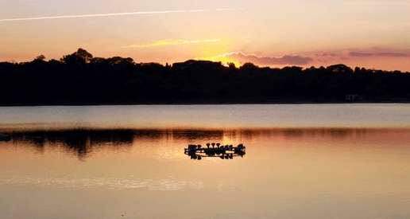
Futala lake, built by Raje Bhosle dating back to centuries, is known for its charming atmosphere and coloured fountains. The pleasant atmosphere makes it a beautiful picnic spot.
Ganesh Mandir Tekdi
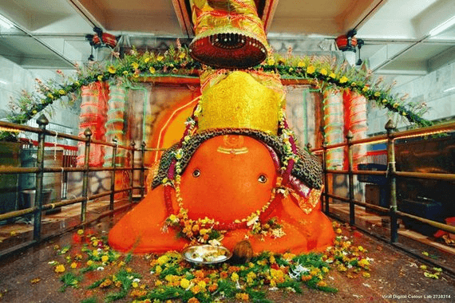
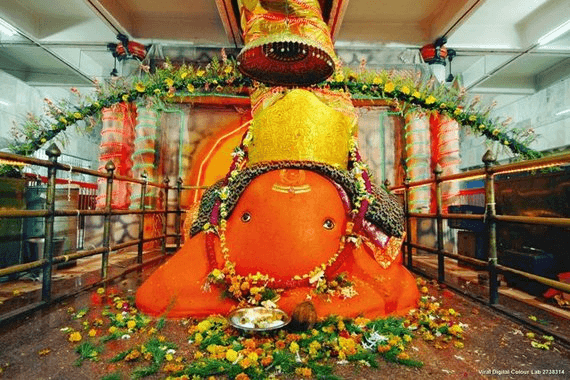
Ganesh Tekdi Mandir has a very strong following in the city and is believed to attract 5,000 visitors daily. The monthly amount collected through donations provided by the devotees is believed to be up to 12-15 Lakhs.The temple welcomes devotees uptill 12:00 PM. The waving of a lamp "Aarti" is done 4 times a day and a sweet called "Modaka" is distributed as a divine gift. The Idol of The Lord is said to be self-existent. It is said that the idol was not as big, it was quite small but it grew with the passage of time. It is decorated with gold and silver ornaments as well as flowers. On special occasions like "Ganesh Chaturthi" and "Ekadashi", the devotees get a chance to witness the idol wearing a crown.
Seminary Hill
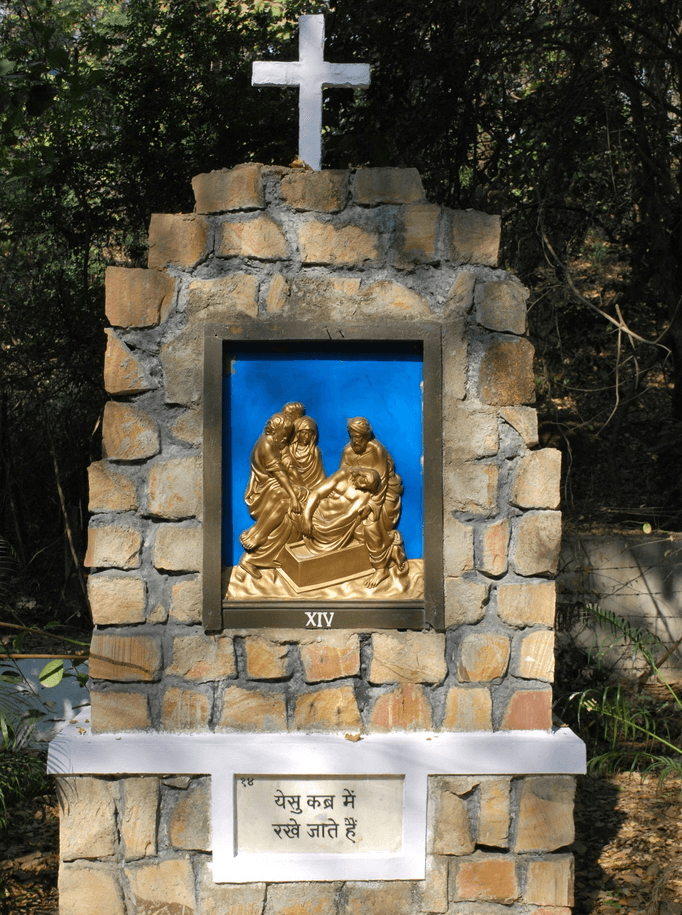
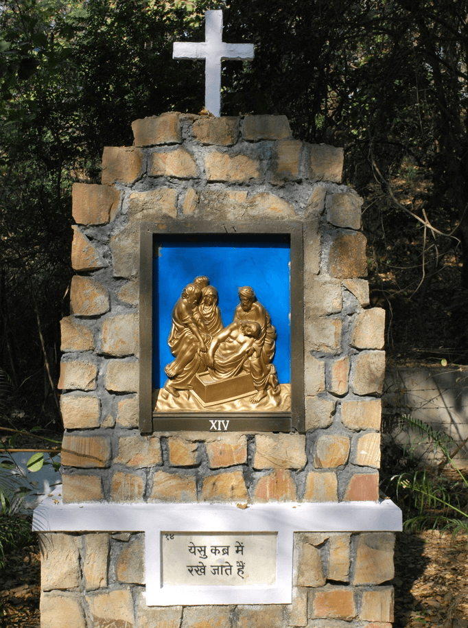
The main attraction of the Seminary Hill in Nagpur is the natural view that it offers. The Seminary Hill is actually a hillock. There's a huge park and garden located at this place.
All Saints' Cathedral
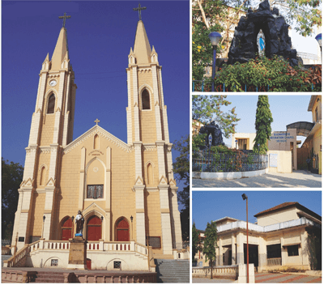
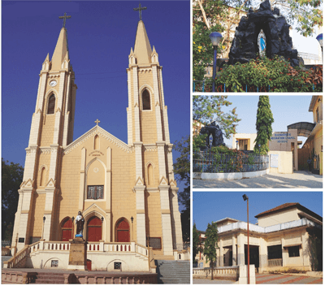
All Saints' Cathedral is the seat of the Bishop, and is presently affiliated to The church of North India (Estd. 27th November, 1970) - which now handles all the churches of British Raj and has been working ceaselessly to mould these churches into the Indo-christian culture.
Dr. Babasaheb Ambedkar International is also known as Sonegaon Airport, is a public domestic and international airport serving the city of Nagpur, Maharashtra, India. It is one of the 18 Airports in the Maharashtra. It was named for Bhimrao aka Dr. "Babasaheb" Ambedkar, the famous Indian economist, jurist and politician . Strategically located and in a prosperous region, Nagpur Airport figures to play prominently in the spectacular growth of air travel in India. The airport connects Nagpur to Indias main aviation hubs of Mumbai and Delhi, as well as the international destinations Sharjah, Dubai and Doha. The airport has witnessed a slight decrease in air traffic due to increase in fuel prices in recent days.
The railways at Nagpur were established a long time back well before the independence of India, as Nagpur used to be an important city of India even in those days. The year 1867 marks the beginning of the Nagpur railways. In the year 1881, the city of Nagpur was linked up with another important city of India, that is, Kolkata, via the railways of the state of Chhattisgarh. The railway station of Nagpur was previously housed towards the east of the place where the current station has been constructed. The present-day railway station of Nagpur was also put up in the pre-independence days. The year of its establishment is 1924.
This is a patented and unique Railway Crossing near Nagpur station called diamond crossing. It is the place where India crosses from North to South ( Delhi - Chennai) and East to West (Howrah - Mumbai).
The High Court of Judicature at Nagpur continued to be housed in this building till there organisation of States in 1956. With effect from 1-11-1956, eight Marathi speaking districts of Vidarbha formed part of the greater bi-lingual State of Bombay which came into existence. Remaining fourteen Hindi speaking districts of the former State of Madhya Pradesh became part of the newly constituted State of Madhya Pradesh with the capital at Bhopal. The High Court of Madhya Pradesh was treated as successor of the former High Court at Nagpur.
| S.No | Name of the department | Website URL |
| 1. | Collector Office | http://www.nagpur.nic.in |
| 2. | PDS Alert | http://nagpurcollector.org |
| 3. | Commissioner Office | http://nagpur.nic.in/divisionalcommissioner/htmlscripts/index.asp |
| 4. | Police Department | http://nagpurpolice.info/ |
| 5. | Nagpur Municipal Corporation | http://nmc.org.in |
| 6. | Nagpur Improvement Trust | http://nitnagpur.org |
| 7. | Passport Office | http://passport.gov.in/nagpit.html |
| 8. | BSNL Office | http://nagpur.bsnl.co.in/teldir |
| 9. | MSMB Development Institute | http://sisinagpur.nic.in/ |
| 10. | Central Institute Of cotton research | http://cicr.org.in/ |
| 11. | Western coal Fields Limited | http://westerncoal.nic.in/ |
| 12. | Nagpur University | http://nagpuruniversity.org/ |
| 13. | Central Excise | http://cenexcisenagpur.nic.in |
| 14. | National Environment Engineering Research Institute | http://neeri.res.in |
| 15. | Maharashtra animal and fishery sciences university | http://mafsu.in |
| 16. | Regional telecom training center Nagpur | http://www.rttcnagpur.bsnl.co.in |
| 17. | National power training institute Nagpur | http://nptinagpur.com |
| 18. | National fire service institute Nagpur | http://nfscnagpur.nic.in |
| 19. | Government medical college and hospital Nagpur | http://gmcnagpur.org.in/ |
| 20. | National Reserch center for citrus | http://nrccitrus.nic.in/ |
| 21. | Indian Bureau of mining | http://ibm.nic.in/ |
| 22. | Jawaharlal Nehru aluminum research development and design centre | http://www.jnarddc.gov.in |
| 23. | Tribal development department | http://mahatribal.gov.in/ |
| 24. | Indian metrological Department | http://imdnagpur.gov.in/ |
| 25. | RTO Office | http://www.transportindia.in/office.asp?state=16&city=59 |
RSC-NGP
The Raman Science Centre, Nagpur is an constituent unit of National Council of Science Museums, Kolkata, More Details: http://www.rscnagpur.gov.in/
VNIT-NGP
Visvesvaraya National Institute of Technology, Nagpur is one of the thirty National Institutes of Technology in the country. More Details: http://www.vnit.ac.in/
Gov. Polytechnic-NGP
Indira Gandhi Government Medical College & Hospital (IGGMCH) established in the year 1905 is located on Central Avenue, near the city railway station in Nagpur, run by the Government of Maharashtra. It is one of the two Government Medical Colleges in Nagpur city and one among the top ten Govt. Medical Colleges in Maharashtra. More Details: http://www.iggmc.org/
Post office Addresses
| * | Head Post office, Nagpur GPO Post office, Nagpur, Maharashtra. Pincode-440001 |
| * | Sadar Bazar Post office, Nagpur |
| * | Ravi Nagar, Post office, Nagpur |
| * | Bureau Of Mines Post office, Nagpur |
| * | Coal Estate Post office, Nagpur |
| * | Kasturchand Park Post office, Nagpur |
| * | Mohan Nagar Post office, Nagpur |
| * | Eternity Mall |
| * | Empress city Mall |
| * | Poonam Pride Mall |
| * | Big Bazaar |
| * | Store One Retail I Limited Mall |
Haldiram's is a major Indian sweets and snacks manufacturer based in Nagpur, Maharashtra, India. The company has manufacturing plants in Nagpur, New Delhi, Kolkata, Bikaner. Haldiram's has its own retail chain stores and a range of restaurants in Nagpur and Delhi
Hotel Airport Centre Point is A superior budget hotel with traditional hospitality & professionalism with touch of informality. A pioneering effort in the Orange City of Nagpur, the Hotel has established its creditability and reputation of being the highly service oriented property over the years. Along with the quality dining and entertainment the hotel has banqueting & conferencing facilities which are acclaimed in the city as the best value for money and a venerable venue for any occasion. Versatile facilities at the hotel are suitable for Wedding Ceremonies, Family get-togethers, Cocktail Dinners, Kitty Parties, Conferences & Seminars, Product Launches, Fashion Shows and other promotional events. Audio Visual Equipments, Lap Top Computers, LCD & OHP Projectors, Cordless Mikes and other supporting aids available

Vidarbha Cricket Association launched its new venue at Jamtha in early November 2008. Spread over 33 acres (130,000 m2), VCA Stadium is a swanky stadium with 45000 sitting capacity, world-class training and practice facilities for the players, along with score of other facilities than one can think of.
Located, 16 km on Nagpur - Hyderabad NH7, this piece of ultra modern sport facility, by far it is the best cricket stadium in India in terms of facilities.Spacious and well furnished pavilion with a decent sit out, mini gymnasium, exclusive lunch hall, medical room etc. completes the all round facility for the players.Special air-conditioned enclosure for the members at the Southern end is an added attraction.
Nagpur is geographical center of India. It has a rare blending of antiquity and modernity. The second greenest city of India is popularly know as ORANGE CITY.
| State | Maharashtra |
| Status | Second Capital |
| Latitude | 21.09N |
| Longitude | 79.09E |
| Location | 21° 09 N 79° 09 E |
| MSL | 247.5-305 Mtrs |
| Area | 220 Sq.Kms |
| Population | 2,405,421(as per 2011) Densiy 11,000/km2 |
| Altitude | 247.5-305 meters above sea level. (900-1000 ft) |
| Languages | Marathi - 50% (Official) |
| (App. in %) | Hindi - 40% |
| Others - 10% | |
| Rainfall | 1,205 mm |
| Airport | Sonegaon 8 Kms from zero milestone |
| Station | Nagpur Junction (Central Railway) |
| Telephone | 91-712 |
| Pincode | 440 001 - 440 037 |
| * | Big Cinemas : Sangam |
| * | CineMax: Eternity Mall |
| * | INOX: Jaswant Tuli Mall, Kamptee Road |
| * | INOX: Poonam Mall |
| * | Jaishree Talkies: Nagpur |
| * | Kamla Cineplex: Nagpur |
| * | Liberty Cinema: Sadar |
| * | PVR: Empress City Mall, Nagpur |
| * | Smruti Cinema: Nagpur |
| * | Sudama Threatre: Dharampeth |